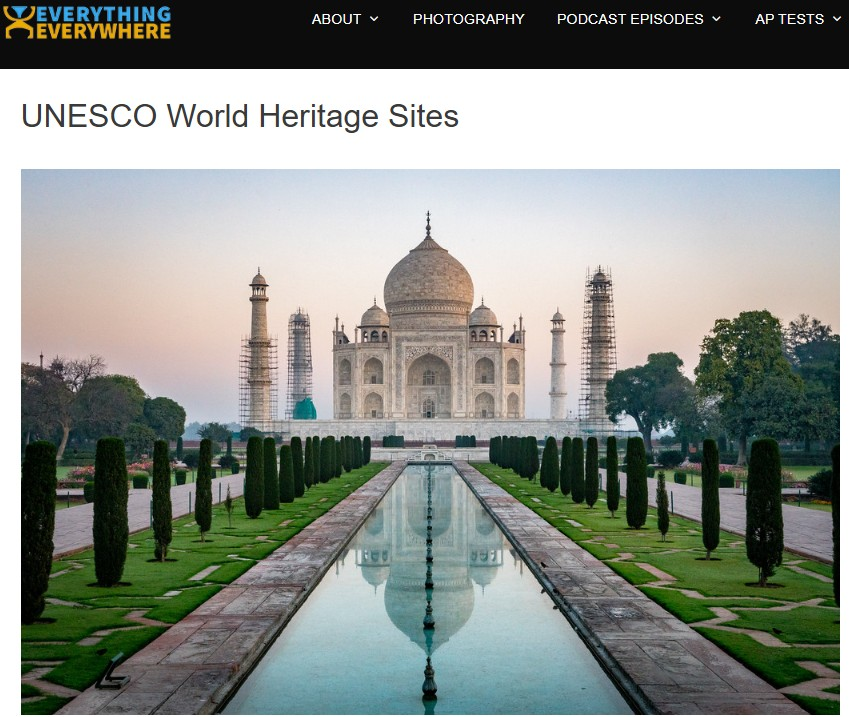

-------------
जब विश्व में इंजीनियरिंग जैसे व्यवसायों के लिए मानक और सर्वोत्तम मार्गदर्शन निर्धारित हैं (इंस्टीट्यूट ऑफ इलेक्ट्रिकल एंड इलेक्ट्रॉनिक इंजीनियर्स, 2026), तो मेरे विचार में मानव जीवन के लिए भी सर्वोत्तम मार्गदर्शन निर्धारित होना चाहिए। इसलिए मैं विश्व के सबसे पुराने जीवित धर्म जो आज भी प्रचलित है की शपथ पुस्तक को प्रस्तुत करता हूँ, - श्रीमद् भगवद् गीता। अतः, श्रीमद् भगवद् गीता (MatchlessGifts, 2021, Jul, 2, 49:00- 52:46) में वर्णित सर्वोत्तम मार्गदर्शन को मैं अपने व्यक्तिगत जीवन में अपनाने का प्रयास करता हूँ। मेरे लिए गीता संयुक्त राष्ट्र शैक्षिक, वैज्ञानिक और सांस्कृतिक संगठन (यूनेस्को) द्वारा मान्यता प्राप्त मानवता की जीवंत धरोहर है।See here for English version of page.

-------------
मम वर्त्मानुवर्तन्ते मनुष्याः पार्थ सर्वशः--श्रेष्ठ पुरुष जैसा आचरण करता है, दूसरे लोग भी उसीके अनुसार आचरण करने लग जाते हैं (गीता 3। 21)। भगवान् सबसे श्रेष्ठ (सर्वोपरि) हैं, इसलिये सभी लोग उनके मार्गका अनुसरण करते हैं| तीसरे अध्यायमें तेईसवें श्लोकके उत्तरार्धमें भी यही बात (उपर्युक्त पदोंसे ही) कही गयी है।
साधक भगवान्के साथ जिस प्रकारका सम्बन्ध मानता है भगवान् उसके साथ वैसा ही सम्बन्ध माननेके लिये तैयार रहते हैं। महाराज दशरथजी भगवान् श्रीरामको पुत्रभावसे स्वीकार करते हैं, तो भगवान् उनके सच्चे पुत्र बन जाते हैं और सामर्थ्यवान् होकर भी 'पिता' दशरथजीके वचनोंको टालनेमें अपनेको असमर्थ मानते हैं (टिप्पणी प0 233)। इस प्रकारके आचरणोंसे भगवान् यह रहस्य प्रकट करते हैं कि यदि तुम्हारी संसारमें किसीके साथ सम्बन्धके नाते प्रियता हो तो वही सम्बन्ध तुम मेरे साथ कर लो, जैसे--मातामें प्रियता हो तो मेरेको अपनी माता मान लो, पितामें प्रियता हो तो मेरेको अपना पिता मान लो; पुत्रमें प्रियता हो तो मेरेको अपना पुत्र मान लो, आदि। ऐसा माननेसे मेरेमें वास्तविक प्रियता हो जायगी और मेरी प्राप्ति सुगमता-पूर्वक हो जायगी।
दूसरी बात, भगवान् अपने आचरणोंसे यह शिक्षा देते हैं कि जिस प्रकार मेरे साथ जो जैसा सम्बन्ध मानता है, उसके लिये मैं भी वैसा ही बन जाता हूँ, उसी प्रकार तुम्हारे साथ जो जैसा सम्बन्ध मानता है, तुम भी उसके लिये वैसे ही बन जाओ; जैसे--माता-पिताके लिये तुम सुपुत्र बन जाओ पत्नीके लिये तुम सुयोग्यपति बन जाओ, बहनके लिये तुम श्रेष्ठ भाई बन जाओ, आदि। परन्तु बदलेमें उनसे कुछ चाहो मत; जैसे--कुछ लेनेकी इच्छासे माता-पिताको अपने न मानकर केवल सेवा करनेके लिये ही उन्हें अपने मानो। ऐसा मानना ही भगवान्के मार्गका अनुसरण करना है। अभिमानरहित होकर निःस्वार्थभावसे दूसरेकी सेवा करनेसे शीघ्र ही दूसरेकी ममता छूटकर भगवान्में प्रेम हो जायगा, जिससे भगवान्की प्राप्ति हो जायगी।
तीसरा, सामान्य रूप से समाज के प्रति निम्नलिखित बातों का पालन किया जाना चाहिए: (rgmedia108, 2018, Jan, 19):
* भगवान राम घोषणा करते हैं, "मैं अपने पिता के आदेश का पालन करने के लिए अग्नि में प्रवेश कर सकता हूँ, घातक विष खा सकता हूँ और समुद्र में कूद सकता हूँ।" (वाल्मीकि रामायण, अयोध्या 18/28-29).
स्रोत: उपरोक्त अधिकांश जानकारी भगवद् गीता से ली गई है। यह श्री रामसुखदास जी द्वारा भगवद् गीता के अध्याय 4 श्लोक 11 पर दी गई टीका से ली गई है। (Ramsukhdas, 2006, Pg. 490)
-------------
10. Ramsukhdas, S.(2006). Śrīmad Bhagavadgītā Sādhaka-Sañjīvanī [with Appendix] Vol. I Commentary [With Sanskrit text, Transliteration and English Translation] (Translated into English by S. C. Vaishya) Revised by R.N. Kaul & Kesnoran Aggarwal. Published by Gita Press Gorakhpur.© 2026 ज्योतिर्मय सरना। इस वेबसाइट पर मौजूद सामग्री ज्योतिर्मय सरना द्वारा संकलित की गई है। बिना अनुमति के कॉपी, रीपोस्ट या उपयोग न करें। लाइसेंस देखें।